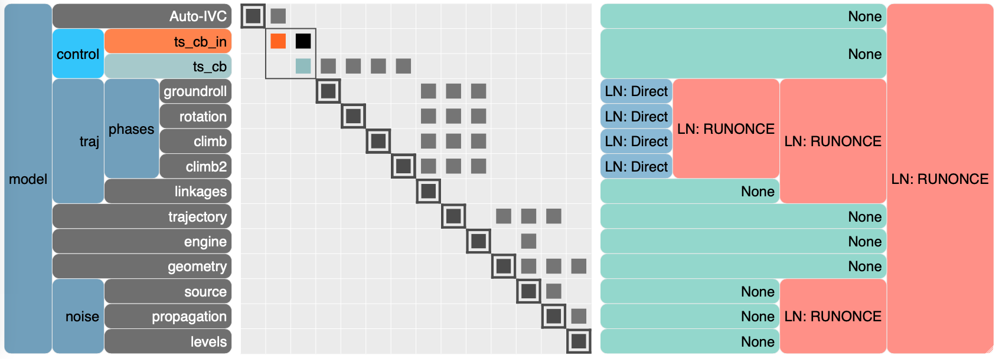

how to use pyNA?¶
Settings dictionary¶
The operation of pyNA is controlled using the settings class. An example of a settings dictionary can be found here.
Case folder structure¶
pyNA uses a specific folder structure for each analysis: all files related to the case named settings['case_name'] are saved in a directory organized as follows:
{kind=link}
The aircraft subfolder contains all aircraft parameters (aircraft.json), the raw aircraft aerodynamics data (aerodeck_cl.csv, aerodeck_cd.csv) and the aerodynamics deck used in the trajectory computations (cl_aircraft.npy, cd_aircraft.npy).
The raw engine deck data used in trajectory computations (engine_deck.csv) and engine time series files for a predefined trajectory (engine_timeseries.csv) are saved in the engine subfolder.
The output folder contains saved Openmdao models (trajectory.sql) and a table with the results of the convergence check (convergence.csv). Model N2-diagrams (case_n2.html) can also be found here.
A temporary shielding folder is used for a shielding coefficient time series for a predefined trajectory (shielding.csv). This folder will be removed once the shielding module is implemented in pyNA.
Finally, the trajectory folder contains trajectory time series (trajectory.csv).
pyNA structure¶
An example pyna noise model structure is illustrated using the following N2 diagram. More information about the N2 diagram can be found on the Openmdao website. An interactive version of the N2 diagram of pyNA can be found here.
{kind=link}
From the N2diagram, you can see the components in the model, as well as how specific outputs are fed as inputs into different components. If you want to make an N2-diagram of your own model, you can use:
import openmdao.api as om
om.n2(py.problem)
Choosing a programming language¶
The noise modules in pyNA are developed in two programming languages: python and julia. The default language is python. When doing trajectory optimizations, pyNA makes use of the Julia ForwardDiff module to compute acoustic objective function sensitivities. You can choose which language to use by setting a python environment variable to 'python' or 'julia':
import os
os.environ['pyna_language'] = 'julia'
Initializating and running a pyNA model¶
To start up pyNA, load the pyna_settings class and initialize the model:
from pyNA import pyna
py = pyna(pyna_settings)
pyna_settings = pyna.load_settings(case_name='stca')
After the model is initialized, you can run the following compute functions:
py.compute_trajectory()
py.compute_noise_timeseries()
py.compute_noise_source_distribution()
py.compute_noise_epnl_table()
py.compute_noise_contours()
py.compute_trajectory_noise()
Save and load results from a file¶
The OpenMDAO models can be saved by setting settings['save_results'] = True. Results can be read from the recorded output file using the pyna.load_results(self, filename, casename) function. Specify the file name in the output folder of the settings["case_directory"] directory using filename and specify the case reader casename. To view the names of the cases in an OpenMDAO case recorder, use case.list_cases(). Finally, To save a time series .csv file from an OpenMDAO model, use pyna.save_timeseries command.
Further support¶
For more support, just send me an email at lvoet@mit.edu.
If you have any comments or feedback for the pyNA tema, feel free to file a github issue or open a github pull request.
You can also suggest new projects we can add to pyNA.
We are looking forward to working with you!